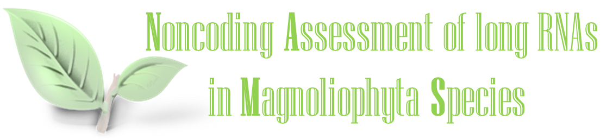

Published software and resources
- iSeeRNA: accurate and extra-fast lincRNA/mRNA classifier
- Sebnif: comprehensive novel lincRNA filter pipeline for RNA-seq data
- NAMS: Noncoding Assessment of long RNAs in Magnoliophyta Species 
- Methy-Pipe: integrated pipeline for BS-seq data analysis
- BSviewer: lightweight nucleotide-level visualizer for bisulfite sequencing data
- COFFEE: control-free and cross-platform algorithm for T21 test
- FEMER: noninvasive reconstruction of placental methylome
- GeneCT: Generalizable cancerous-status and tissue origin classifier for tissue biopsies
- ODS: the Online Diagnosis System for Sanger sequencing based genetic testing
- mTFkb: fundamental annotation of mouse transcription factors
Long intergenic noncoding RNA (lincRNA) analysis

Bisulfite sequencing (BS-seq) data analysis